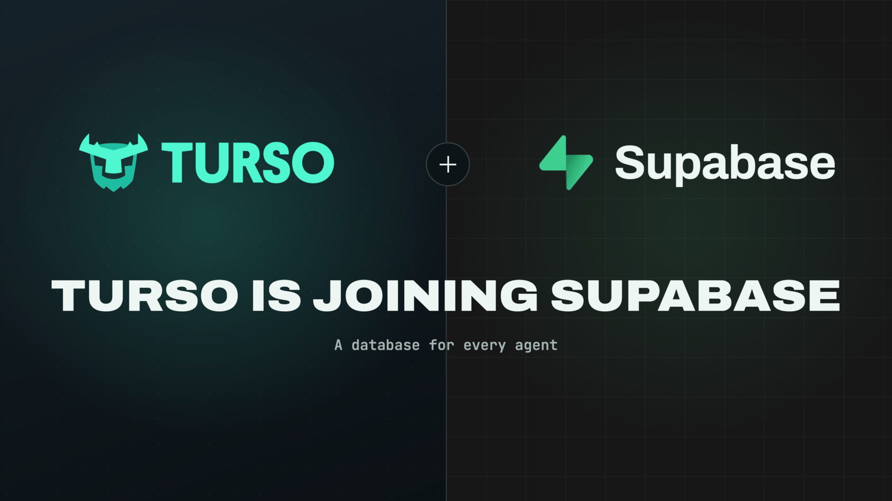

AI 단신 HELLO, HUMAN! / BRIEF 04
Supabase, Turso 인수 발표
AI 에이전트마다 작은 DB 하나씩
AI도 일하려면 기록할 공간이 필요합니다.
작은 앱과 에이전트의 작업 공간을 넓히려는 두 회사의 만남
Supabase가 10월 2일, 데이터베이스 기업 Turso 인수를 발표했습니다. AI 에이전트가 만드는 수많은 작은 앱과 실험에, 가벼운 데이터베이스를 빠르게 제공하겠다는 구상입니다. Supabase는 Postgres 중심 개발을, Turso는 SQLite 중심 제품 개발을 이어 간다고 밝혔습니다. Supabase 공식 발표 ↗

AI에게 “상품 정보를 정리해 줘”라고 일을 맡겼다고 생각해 볼까요. AI도 무엇을 했고, 어디까지 끝냈으며, 다음에 무엇을 해야 하는지 기록할 공간이 필요합니다. 데이터베이스(DB)는 이런 내용을 저장하고 다시 꺼내 쓰는 곳입니다. 이번 발표는 에이전트마다 필요할 때 꺼내 쓸 수 있는 ‘작업 노트’를 마련하겠다는 이야기로 읽을 수 있습니다.
01 / 두 회사가 만드는 것
앱의 기본 설비와
작고 가벼운 데이터 저장 공간
SUPABASE / 수파베이스
앱의 기본 설비 세트
Postgres DB를 중심으로 앱 개발에 필요한 기능을 함께 제공합니다.
- 데이터 저장·조회
- 로그인·사용자 인증
- 파일 저장·실시간 기능
TURSO / 터소
작업마다 작은 DB
사용자나 에이전트별로 가벼운 DB를 많이 만들어 운영하는 데 초점을 맞춥니다.
- 필요할 때 DB 생성
- 작업별 데이터 분리
- 할 일·작업 상태 저장
Postgres와 SQLite는 데이터를 저장하고 다루는 DB 기술입니다. Turso는 SQLite와 호환되는 별도의 엔진을 Rust로 개발하는 회사로, 이번 인수 대상이 SQLite 자체인 것은 아닙니다. 인수 대상과 기술 설명 ↗
02 / 데이터베이스 인수가 AI 뉴스인 이유
AI가 일을 늘리면,
기록할 공간도 늘어납니다
Supabase는 자사에서 매주 100만 개 이상의 DB가 새로 생성된다고 밝혔습니다. 운영 중인 유료 DB 수가 아닌, 회사가 발표한 생성량입니다. 작은 작업마다 전용 서버를 마련하는 부담을 줄이고, 필요한 순간에 DB를 제공하는 구조가 중요해졌다는 설명입니다. 발표 원문 ↗
실험 기록과 주문·결제 같은 핵심 데이터의 경계를 정합니다.
실제 활용 사례도 있습니다. Turso가 공개한 CTO.new 사례에서는 프로젝트마다 DB 하나를 두고, AI 에이전트 팀이 할 일과 진행 상황을 공유합니다. 사람 팀이 업무 보드를 함께 쓰는 것과 비슷합니다. 핵심 운영 시스템에는 Postgres를 유지하면서, 에이전트의 작업 상태는 별도로 관리하는 방식입니다. 공식 고객 사례 ↗
03 / 기대와 확인
통합은 앞으로,
기존 제품은 계속
- 계속 운영
- Turso는 기존 DB·API·워크플로와 오픈소스 개발을 이어 간다고 밝혔습니다.
- 향후 통합
- 두 회사는 필요에 따라 Postgres 생태계로 이어지는 경로와, 향후 수개월의 더 깊은 통합을 예고했습니다.
이번 발표만으로 SQLite에서 Postgres로 자동 이전하는 기능이 완성됐다고 볼 수는 없습니다. 어떤 기능이 언제 연결되는지는 후속 발표에서 확인할 부분입니다. Turso의 운영·통합 방침 ↗
성능은 어떻게 읽어야 할까요?
Turso는 9월 29일 공개한 0.8 버전에서 여러 작업이 동시에 데이터를 쓰는 성능을 개선했다고 발표했습니다. 한편 ClickBench의 공개 기록에는 이전 0.7 버전에서 대량 데이터 적재와 일부 분석 쿼리에 문제가 있었던 사례가 있습니다.
두 자료는 버전과 시험 조건이 다릅니다. 성능을 한 줄로 단정하기보다 우리가 사용할 데이터와 작업으로 검증해야 한다는 것이 실무적인 판단입니다.
원문과 확인 자료
SUPABASE · 2026. 10. 02Supabase is acquiring Turso공식 발표 읽기- Turso · 인수 발표와 기존 제품 운영 방침 · 2026. 10. 02
- Turso · CTO.new의 프로젝트별 DB 활용 사례 · 2026. 08. 06
- Turso · 0.8 버전의 동시 쓰기 성능 발표 · 2026. 09. 29
- ClickBench · Turso 0.7 시험 문제와 변경 제안 기록
확인 기준 2026년 10월 3일(한국시간). 두 회사의 공식 발표, 제품 설명, 고객 사례와 공개 시험 기록을 대조했습니다. 생성량·성능·고객 사례는 각 자료의 발표 내용이며 직접 재측정하지 않았습니다. 업무 도식과 적용 제안은 이해를 돕기 위한 헬로우 휴먼의 해석입니다.
AI뉴스 속보·단신으로 돌아가기